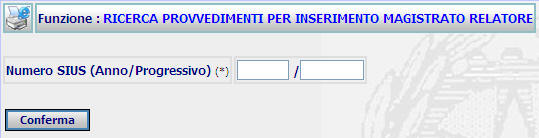
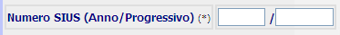
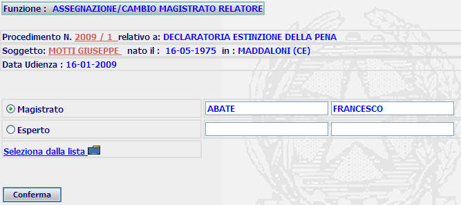
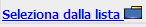

GENERALITA'
Ricerca Provvedimenti per Inserimento Magistrato Relatore : La funzione consente di assegnare o cambiare magistrato relatore di un determinato procedimento.
ATTENZIONE: Prima di iscrivere un magistrato è utile verificare se sia già presente tramite la funzione di ricerca magistrati.
LE MASCHERE VIDEO
Il sistema chiede necessariamente di ricercare il provvedimento su cui occorre inserre o cambiare il magistrato relatore.
La funzione viene realizzata attraverso l'utilizzo della seguente maschera

COME FARE PER ...
| Per ricercare il provvedimento nel quale operare il cambio o l'assegnazione del magistrato relatore l'utente deve: |
1) inserire anno e numero del procedimento

2) Confermare i dati
inseriti nella maschera agendo sul bottone
 .
A fronte di questa operazione viene visualizzata la seguente maschera
.
A fronte di questa operazione viene visualizzata la seguente maschera

| Per inserire il magistrato l'utente deve: |
a) selezionare la voce
b) selezionare dalla lista 
c) Confermare i dati
inseriti nella maschera agendo sul bottone
 A
fronte di questa operazione viene visualizzata la maschera di
dettaglio magistrato relatore
A
fronte di questa operazione viene visualizzata la maschera di
dettaglio magistrato relatore
| Per inserire l'esperto
l'utente deve: a) selezionare la voce b) selezionare dalla lista il nome dell'esperto
c) Confermare i dati
inseriti nella maschera agendo sul bottone
|
CAMPI
| NOME | DESCRIZIONE |
| numero sius | compilare il campo con anno e numero del procedimento |
| magistrato | campo compilabile attraverso la funzione "seleziona dalla lista" |
| esperto | campo compilabile attraverso la funzione "seleziona dalla lista" |
PULSANTI
Oltre al pulsante
 facente parte del gruppo di
pulsanti di "Uso Comune"
ed ai
pulsanti orizzontali dell'area
di navigazione è
presente il seguente pulsante:
facente parte del gruppo di
pulsanti di "Uso Comune"
ed ai
pulsanti orizzontali dell'area
di navigazione è
presente il seguente pulsante:
|
PULSANTE |
DESCRIZIONE |
|
|
A fronte di tale comando, il sistema visualizza la lista predefinita. |
BOTTONI
Oltre ai comandi funzionali relativi al menù verticale sono presenti i seguenti comandi:
|
COMANDI |
DESCRIZIONE |
|
|
A fronte di tale comando, il sistema dopo aver verificato la validità dei dati specificati, termina la funzione con l'inserimento del magistrato. |
CONTROLLI
A fronte
della pressione del bottone
 , il sistema
verifica la correttezza dei dati e visualizza
la
maschera
del dettaglio magistrato relatore.
, il sistema
verifica la correttezza dei dati e visualizza
la
maschera
del dettaglio magistrato relatore.